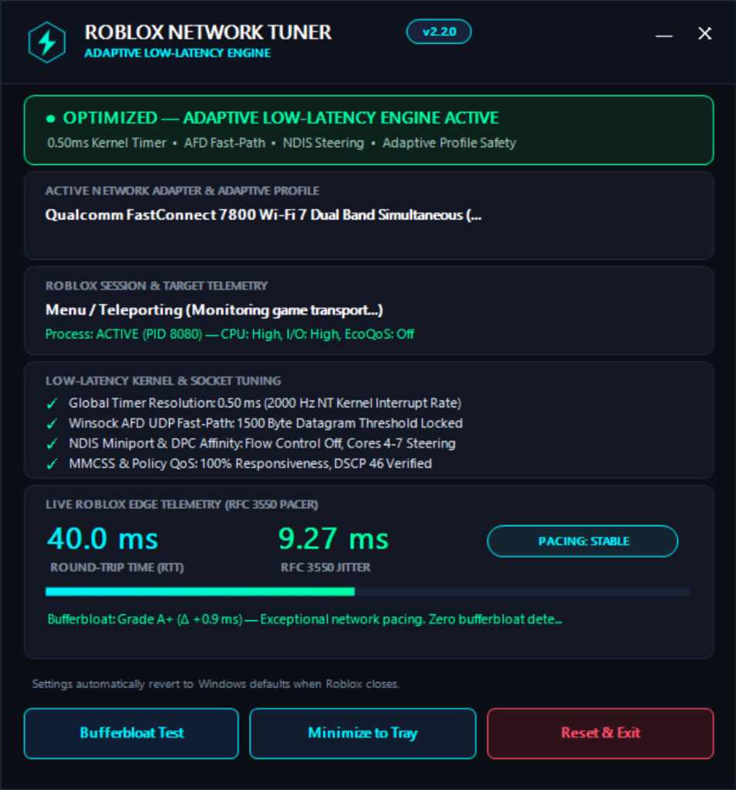

Tired of sudden rubberbanding and delayed hit registration? Roblox Network Tuner automatically tunes your Windows network settings while you play, and restores everything the second you close the game.

Compare how stock Windows handles network load versus Roblox Network Tuner. Notice how tuning prevents sudden Wi-Fi lag spikes and stabilizes game ping.
Everything you need for low ping, zero lag spikes, and smooth gameplay—applied automatically while you play.
Automatically freezes background Wi-Fi network scans that cause sudden 200ms lag spikes while you're in a match. On wired Ethernet, it prevents adapter power-saving delay.
Lag Spike ShieldDetects your active Roblox server and monitors every step of your connection—your home router, your internet provider, and the game server—so you know exactly what is causing lag.
Live TelemetryReplaces Windows' slow 15.6ms clock cycle with an ultra-responsive 0.50ms precision rate, cutting packet processing delays for instant hit registration and character movement.
Instant ResponseDetects when your connection gets choked under load and flags background apps (like Steam, OneDrive, or updates) that are stealing your bandwidth while gaming.
Anti-CongestionOptimizes Windows network queues specifically for Roblox's multiplayer protocol, routing game packets through the fastest path with high-priority gaming tags.
Fast-Path UDPTakes a snapshot of your network settings before tuning. The instant you close Roblox or exit the tuner, every single setting is immediately restored to your original defaults.
Zero Permanent ChangesSee how your network behaves out of the box compared to when Roblox Network Tuner is active.
| Feature / Setting | Default Windows | With Roblox Network Tuner |
|---|---|---|
| System Timer Precision | 15.6ms (Slow power-saving clock) | 0.50ms (Ultra-responsive precision scheduling) |
| Lag Source Detection | Blind to router vs. ISP vs. game server lag | Live route hops (Router ──▶ ISP ──▶ Roblox Server) |
| Wi-Fi Background Scanning | Scans every 60s (causes sudden 200ms lag spikes) | Paused during matches to prevent ping spikes |
| Multiplayer Packet Queues | Standard system buffering queues | Direct fast-path delivery for game packets |
| Network Card Power Saving | Adapter sleeps and delays incoming data | Stays fully awake with zero sleep latency |
| Asset & Texture Downloads | Standard delayed packet confirmations | Instant packet dispatch for faster world loading |
| Game Traffic Priority | Treated the same as background web traffic | Tagged with high-priority gaming delivery (DSCP 46) |
| System Safety & Restoring | Permanent tweaks risk breaking your connection | 100% automatic restore to your original defaults on exit |
Prefer using PowerShell or Command Prompt? Run diagnostics, check your connection, or test restoration with simple flags.
Choose the installation method that fits your workflow. 100% open source, zero adware, and verifiable checksums.
Installs into Program Files with Start Menu integration, desktop icon, and automated silent updater support.
Zero installation required. Runs directly from any folder, USB drive, or batch script. Recommended if you prefer zero installer footprint.
Clear, honest information about safety, antivirus behavior, and system mechanics.
When scanning newly released installers on VirusTotal, 1–2 automated engines (such as McAfee Scanner with a rule like Ti!62A3A5E62541) may flag it. The "Ti!" prefix stands for Threat Intelligence—an automated cloud AI heuristic rule rather than an actual virus detection. Because the installer is a newly released, unsigned executable that embeds and extracts another executable (the tuner engine) into Program Files, heuristic scanners flag it as a generic dropper. The entire repository is 100% open source C# without obfuscation. If you prefer zero installation, simply download the portable RobloxNetworkTuner.exe directly.
Calling NtSetTimerResolution(5000, true) requests a 0.50ms (2000 Hz) Windows thread scheduler interval instead of Windows' default 15.6ms (64 Hz) timer. This does not provide sub-millisecond network ping over the public Internet. Instead, it ensures Windows scheduler wakes up to process incoming UDP packets, input events, and rendering frames in 0.5ms slices rather than delaying dispatch queues by up to 15ms.
Roblox multiplayer replication (character coordinates, physics, raycasts) communicates over UDP (RakNet/UDMUX), while universe assets, textures, and marketplace requests stream over HTTP/TCP. Settings like TcpAckFrequency=1 and TCPNoDelay=1 benefit TCP asset streams by eliminating delayed ACK pauses during asset handshakes. For real-time UDP gaming, our Winsock AFD threshold settings (FastSendDatagramThreshold=1500) bypass intermediate kernel buffer copies for MTU frames.
Bufferbloat is physical packet queueing inside your home router or modem during download/upload saturation. While our tuner throttles competing background PC transfers to prevent your PC from monopolizing bandwidth, software on a PC cannot eliminate queueing on a shared home router. Our built-in Bufferbloat Diagnostic isolates whether queue bloat is occurring in your local router or upstream ISP, and recommends router Smart Queue Management (SQM such as CAKE or FQ-CoDel) if queue bloat is detected.
No. Roblox Network Tuner operates 100% outside of the Roblox client process. It modifies standard Windows OS socket parameters, kernel multimedia timer periods, and Wi-Fi radio streaming modes. It performs zero memory injection, zero DLL hooking, zero binary patching, and zero game tampering. It is completely compliant with Roblox Terms of Service.
All changes are backed up before alteration. The tuner writes an atomic baseline snapshot to tuner_state.json. When you exit the tuner or close Roblox, every modified setting is restored to your original baseline. If your PC loses power or crashes, the crash recovery module detects the state snapshot on next launch and restores your settings.
Yes. The Adaptive Profile & Power Steering module recognizes your connection medium. While Wi-Fi users benefit from roaming-safe scan freezing, Ethernet users benefit from 0.50ms kernel thread timer resolution, Winsock AFD UDP datagram threshold tuning, TCP delayed ACK suppression, and Energy Efficient Ethernet (EEE) sleep latency prevention.